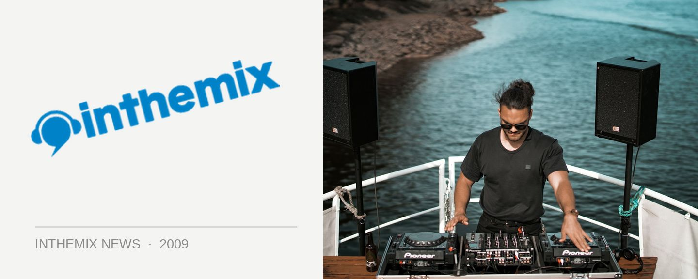

Fuzzy's Harbourlife 2009 ticket ballot
You asked for an easier way to purchase tickets to Harbourlife, and Fuzzy listened. With the waterside party selling out in a record six minutes last year, punters were hoping for a fairer way of purchasing tickets, and this year, and the ‘Harbourlife 2009 Ticket Ballot’ will give fans another chance. Simply complete the online form and you will then be entered into the ticket ballot. If your name is drawn out of the hat, you will receive an email with all of the details on how to purchase your two tickets to Harbourlife.
Entries are open now until 4pm on Thursday September 3rd. If your name is selected then you will be informed by the 15th Sept, several days at least before it goes on sale to the general public on Thursday 17th September. Fuzzy have confirmed they will be holding a few tickets back for general release, but the chance of securing tickets will be much better if you enter the ballot.
Keen to head to Harbourlife this year? Enter the ‘Harbourlife 2009 Ticket Ballot’ now, and check out ITM’s Festival Page.